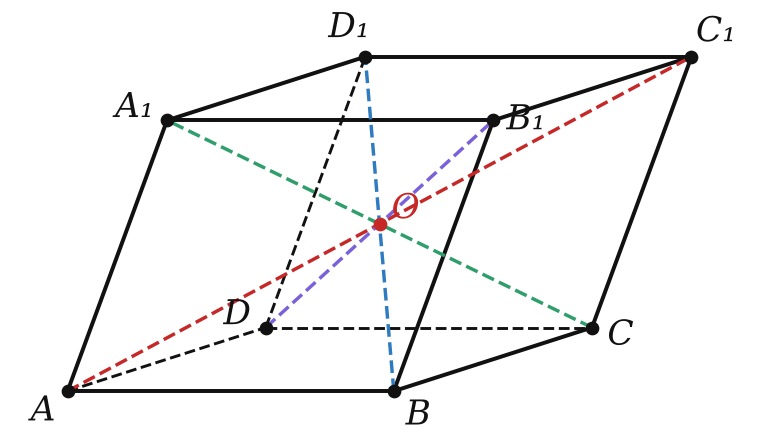
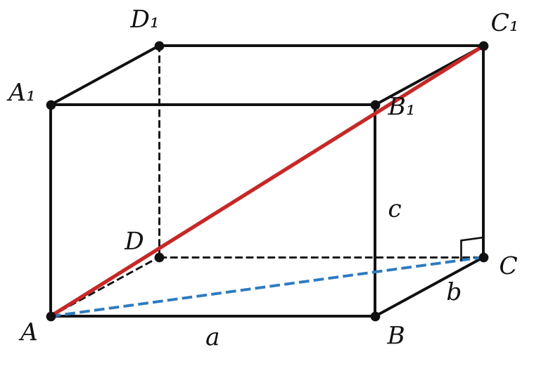

Геометрия · 10 класс
20
Глава 4 · § 20
Параллелепипед
диагонали и «Пифагор в пространстве»
Виды
Параллелепипеды
вид
грани
произвольный
все — параллелограммы
прямой
боковые — прямоугольники
прямоугольный
все — прямоугольники
куб
все — квадраты
Геометрия · 10 класс · углублённый
§ 20 · Параллелепипед
Теорема 20.1
Диагонали
Теорема
Диагонали параллелепипеда пересекаются в одной точке и делятся ею пополам. Эта точка — центр симметрии.

Геометрия · 10 класс · углублённый
§ 20 · Параллелепипед
Теорема 20.2
d² = a² + b² + c²
Теорема
Квадрат диагонали прямоугольного параллелепипеда равен сумме квадратов его измерений.

Геометрия · 10 класс · углублённый
§ 20 · Параллелепипед
Пример
Ромб в основании
диагонали ромба 4 и 4√3
h² + 16 = 48 ⟹ h = 4√2
S_бок = 16 · 4√2 =
64√2
Геометрия · 10 класс · углублённый
§ 20 · Параллелепипед
Практика
Задачи урока
№ 1
Измерения прямоугольного параллелепипеда 1, 2, 2. Найди диагональ.
№ 2
Измерения прямоугольного параллелепипеда 2, 6, 9. Найди диагональ.
№ 3
Стороны основания прямоугольного параллелепипеда 5 и 12, диагональ образует с плоскостью основания угол 45°. Найди высоту.
№ 4
Стороны основания прямоугольного параллелепипеда 7 и 24, высота 4. Найди площадь диагонального сечения.
Геометрия · 10 класс · углублённый
§ 20 · Параллелепипед
Практика
Задачи урока
№ 5
Четыре единичных кубика сложили в ряд. Найди площадь полной поверхности получившегося параллелепипеда.
№ 6
Диагональ куба равна 6. Найди его ребро.
№ 7
Измерения прямоугольного параллелепипеда относятся как 1 : 2 : 2, диагональ 9. Найди измерения.
№ 8
Стороны основания прямого параллелепипеда 3 и 5, угол между ними 60°, высота 4. Найди площадь боковой поверхности и большую диагональ параллелепипеда.
Геометрия · 10 класс · углублённый
§ 20 · Параллелепипед
Дома
Домашнее задание · 1/2
Д1
Измерения прямоугольного параллелепипеда 3, 4 и 12. Найди диагональ.
Д2
Стороны основания прямоугольного параллелепипеда 6 и 8, диагональ образует с основанием угол 60°. Найди высоту.
Д3
Измерения прямоугольного параллелепипеда относятся как 2 : 3 : 6, диагональ 14. Найди измерения.
Геометрия · 10 класс · углублённый
§ 20 · Параллелепипед
Дома
Домашнее задание · 2/2
Д4
Основание прямого параллелепипеда — ромб со стороной 6 и углом 60°, высота 8. Найди меньшую диагональ параллелепипеда.
Д5
Диагональ куба равна 5√3. Найди площадь его полной поверхности.
Д6
Ребро куба
ABCDA
₁
B
₁
C
₁
D
₁ равно 3. Диагональ
A
₁
C
пересекает плоскость
BC
₁
D
в точке
M
. Найди
A
₁
M
.
Геометрия · 10 класс · углублённый
§ 20 · Параллелепипед
← К уроку
‹
›
Во весь экран